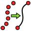

Curves Workbench/en
This documentation is not finished. Please help and contribute documentation.
GuiCommand model explains how commands should be documented. Browse Category:UnfinishedDocu to see more incomplete pages like this one. See Category:Command Reference for all commands.
See WikiPages to learn about editing the wiki pages, and go to Help FreeCAD to learn about other ways in which you can contribute.
Introduction
The Curves Workbench is an External workbench that is Python based with a collection of tools for NURBS curves and surfaces. This workbench is developed with FreeCAD Master and OCC 7.4.
Note: Some tools may not work with earlier versions.
Installation
Download the Curves Workbench via the  Addon Manager. Select the Tools → Addon Manager option from the menu.
Addon Manager. Select the Tools → Addon Manager option from the menu.
References
- Developer: @Chris_G
- Github: https://github.com/tomate44/CurvesWB
- Discussion: https://forum.freecad.org/viewtopic.php?f=8&t=22675
- YouTube tutorial using Curves Workbench: https://www.youtube.com/watch?v=ZVdbvxmJ3Mo
- Dailymotion tutorial, tide bottle, demoing Curves Workbench: https://www.dailymotion.com/video/x6bo9a6
Tools
With the latest update the order of the tools was matched with the menu options of version 0.6.59 and some missing tools were added.
Curve tools
 Parametric line: Creates a parametric line between two vertices.
Parametric line: Creates a parametric line between two vertices.
 Freehand BSpline: Creates a freehand B-spline curve.
Freehand BSpline: Creates a freehand B-spline curve.
 Mixed curve: Creates a 3D curve as the intersection of 2 projected curves.
Mixed curve: Creates a 3D curve as the intersection of 2 projected curves.
 Curve extend: Extends the selected edge.
Curve extend: Extends the selected edge.
 joinCurves: Joins the selected edges into B-spline curves.
joinCurves: Joins the selected edges into B-spline curves.
 Split curve: Splits the selected edge.
Split curve: Splits the selected edge.
 Discretize: Discretizes an edge or a wire.
Discretize: Discretizes an edge or a wire.
-  Approximate: Approximates points to NURBS curve or surface.
{kind=link}
 Interpolate: Interpolates points with a B-spline curve.
Interpolate: Interpolates points with a B-spline curve.
 Parametric Blend curve: Creates a parametric blend curve between two edges.
Parametric Blend curve: Creates a parametric blend curve between two edges.
 Comb plot: Creates a parametric Comb plot on selected edges.
Comb plot: Creates a parametric Comb plot on selected edges.
 CurveOnSurface: Projects a curve on a surface object.
CurveOnSurface: Projects a curve on a surface object.
Surface tools
 ZebraTool: Zebra texture for surface inspection.
ZebraTool: Zebra texture for surface inspection.
 Trim face: Trims a face with a projected curve.
Trim face: Trims a face with a projected curve.
 IsoCurve: Applies a UV oriented lattice onto selected surfaces.
IsoCurve: Applies a UV oriented lattice onto selected surfaces.
 Sketch on surface: Maps a sketch on to a surface.
Sketch on surface: Maps a sketch on to a surface.
 Profile support plane: Creates a support plane for sketches.
Profile support plane: Creates a support plane for sketches.
 Pipeshell profile: Creates a Profile object for PipeShell.
Pipeshell profile: Creates a Profile object for PipeShell.
 Pipeshell: Creates a Pipeshell sweep object.
Pipeshell: Creates a Pipeshell sweep object.
 Gordon surface: Creates a surface that skins a network of curves.
Gordon surface: Creates a surface that skins a network of curves.
 Segment surface: Segments a surface on isocurves.
Segment surface: Segments a surface on isocurves.
 Compression Spring: Creates a compression spring.
Compression Spring: Creates a compression spring.
 Reflect Lines: Creates the reflect lines on a shape, according to a view direction.
Reflect Lines: Creates the reflect lines on a shape, according to a view direction.
 MultiLoft: Lofts profile objects made of multiple faces in parallel.
MultiLoft: Lofts profile objects made of multiple faces in parallel.
 BlendSurface: Creates a surface between two edges with some continuity with their support faces.
BlendSurface: Creates a surface between two edges with some continuity with their support faces.
 BlendSolid: Creates a solid between two edges with some continuity with their support shapes.
BlendSolid: Creates a solid between two edges with some continuity with their support shapes.
 Flatten face: Creates a flat developed face from conical or cylindrical faces.
Flatten face: Creates a flat developed face from conical or cylindrical faces.
 Rotation Sweep: Sweeps profiles along a spine (sweep path) or a point.
Rotation Sweep: Sweeps profiles along a spine (sweep path) or a point.
- Title: <- Wrong Icon and name! - (Curves SurfaceAnalysis) Creates visual analysis maps on selected shapes.
 Draft Analysis: Creates a colored overlay on an object to visualize draft angles.
Draft Analysis: Creates a colored overlay on an object to visualize draft angles.
 Truncated Extend: Cuts a shape and truncates or extends it by a given distance.
Truncated Extend: Cuts a shape and truncates or extends it by a given distance.
 WaterLine: Creates waterline curves on selected faces.
WaterLine: Creates waterline curves on selected faces.
Miscellaneous tools
 GeomInfo: Toggles the display of information about selected shapes.
GeomInfo: Toggles the display of information about selected shapes.
 Extract subshape: Creates non-parametric copies of selected sub shapes.
Extract subshape: Creates non-parametric copies of selected sub shapes.
 Parametric solid: Creates a parametric solid from selected faces.
Parametric solid: Creates a parametric solid from selected faces.
 Paste SVG: Pastes the SVG content of the clipboard.
Paste SVG: Pastes the SVG content of the clipboard.
 Objects to console: Moves objects to the console.
Objects to console: Moves objects to the console.
- Select Adjacent faces: Selects the adjacent faces of the selected subshape.
{kind=link}
 BSpline to Console: Creates a Python script to build the selected B-spline or Bézier geometries.
BSpline to Console: Creates a Python script to build the selected B-spline or Bézier geometries.
- Curves IsoCurve, Curves JoinCurve, Curves ParametricComb, Curves ParametricSolid, .................
- Getting started
- Installation: Download, Windows, Linux, Mac, Additional components, Docker, AppImage, Ubuntu Snap
- Basics: About FreeCAD, Interface, Mouse navigation, Selection methods, Object name, Preferences, Workbenches, Document structure, Properties, Help FreeCAD, Donate
- Help: Tutorials, Video tutorials
- Workbenches: Std Base, Assembly, BIM, CAM, Draft, FEM, Inspection, Material, Mesh, OpenSCAD, Part, PartDesign, Points, Reverse Engineering, Robot, Sketcher, Spreadsheet, Surface, TechDraw, Test Framework
- Hubs: User hub, Power users hub, Developer hub